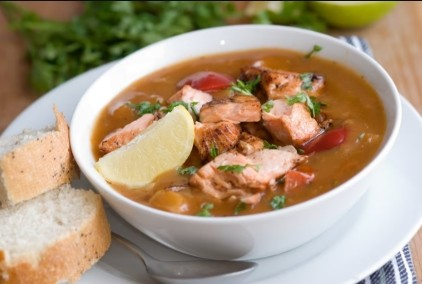

01
Stew Fish with Johnny cake
Breakfast · Savory Stew

Ingredients
- White fish
- Tomato paste
- Flour
- Water
- Onion (finely chopped)
- Celery (finely chopped)
- Fresh thyme
- Oil
- Garlic (minced)
- Hot pepper (optional)
- Lime juice
- Orange juice (sour orange if available)
- Whole allspice
- Salt
- Black pepper
Method
- Season the fish with garlic, salt, black pepper, and hot pepper, then set aside for a few minutes.
- Add lime juice and orange juice to the fish and let it sit to absorb the flavor.
- Heat oil in a pan sauté the onion, celery, and thyme until softened, then set aside.
- In the same pan, lightly fry the fish on both sides until browned, then remove from pan.
- Lower heat and stir in flour, cooking until browned. Gradually add water while stirring until it thickens, then mix in the tomato paste.
- Add fish and vegetables back into the pan and let everything simmer until the fish is fully cooked and the sauce is rich and thick. Season to taste and serve with Johnny cake.